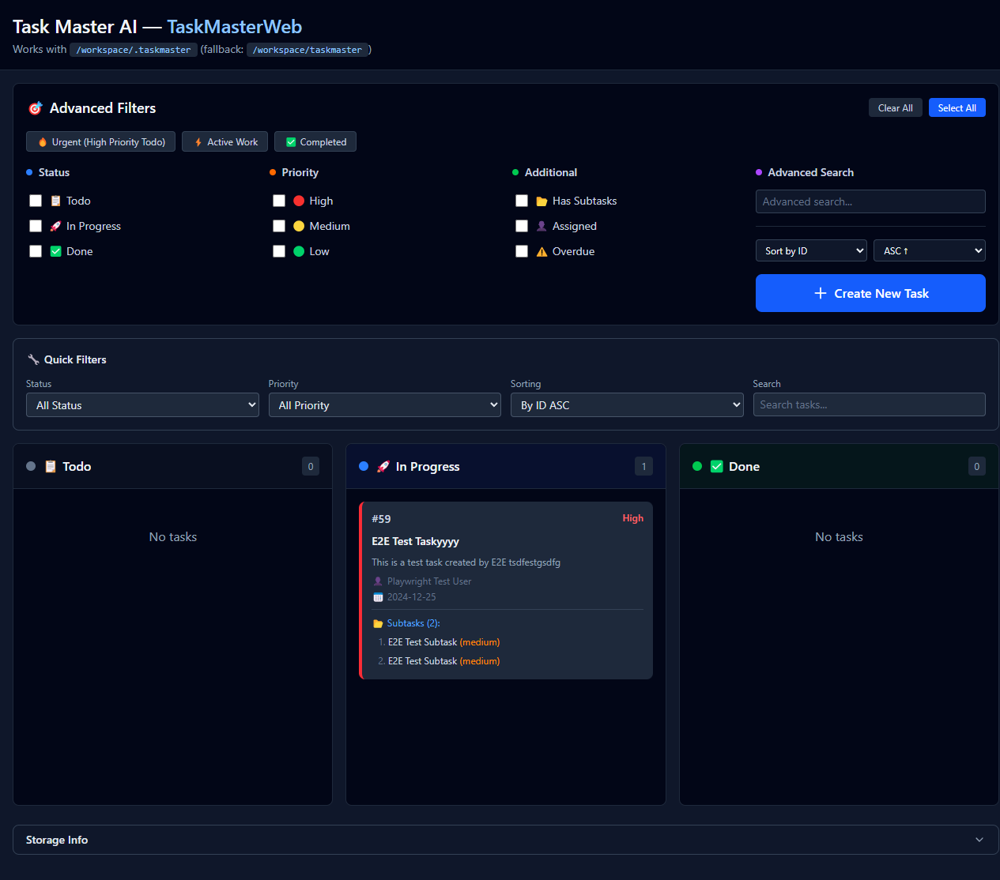
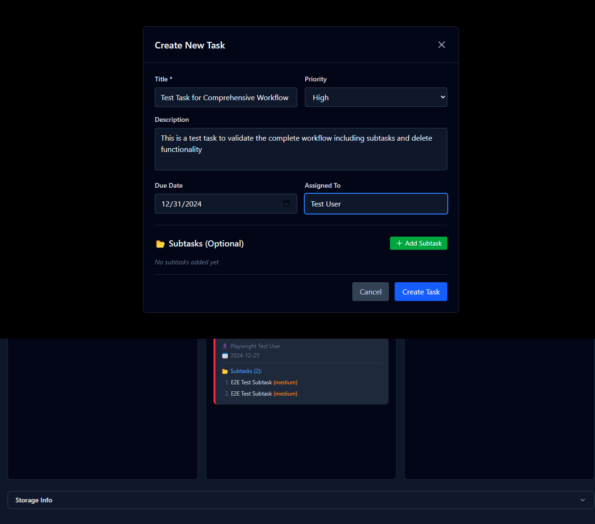

Automated testing of task creation, subtask management, editing, and delete functionality
Test Date: August 24, 2024
Application URL: http://localhost:8199
Application loads correctly, some functionality issues found
Navigation, layout, and initial loading work correctly
Subtask inputs not visible in create modal


Test execution video showing the subtask creation failure:
Severity: High
Description: When clicking "Add Subtask" in the create task modal, the subtask forms are created in the DOM but are not visible to the user. The test timeout occurred because Playwright couldn't interact with invisible elements.
Technical Details:
[data-create-subtask-id="1"] input[onchange*="title"]Expected Behavior: Subtask input forms should be visible and editable after clicking "Add Subtask"
Severity: Medium
Description: The close modal button may not be properly adding the "hidden" class, causing test assertions to fail.
Technical Details:
#createTaskModal.hiddenThe following files were generated during testing:
The test successfully identified the core issue with the subtask creation functionality. The application's basic features work correctly, but the subtask workflow needs to be fixed to complete the comprehensive functionality requirements.